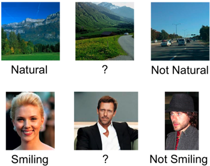

Human-Debugging:
Debugging Machine Visual Recognition via Humans in the Loop
(NSF IIS 1115719, 1341772)
PI: Devi Parikh
Abstract
The overarching goal of this project is to leverage the best known
visual recognition system - the human visual recognition system. This
project employs a "Human Debugging" paradigm to replace various
components of a machine vision pipeline with human subjects, and
examines the resultant effect on recognition performance. Meaningful
comparisons provide valuable insights and pinpoint aspects of the
machine vision pipeline that are performance bottlenecks and require
future research efforts. Specifically, the project considers the
problems of image classification and object detection, and explores the
roles of local and global information, as well part-detection, spatial
modeling and contextual reasoning (including non-maximal suppression)
for these problems respectively.
This project touches on a wide range of problems in visual recognition
including object recognition, scene recognition and object detection.
This novel paradigm of identifying weak links in computational models
via humans in the loop is also applicable to other vision problems, as
well as other sub-fields in AI. By sharing all collected data and
results, and through organized conferences and workshops, this project
will initiate and fuel a dialogue with the research community about
leveraging humans to advance computer vision. More broadly, this work
encourages the involvement of young women and undergraduate students in
computer science research.
Relative Face Attributes Dataset (29 attributes, 60 categories)

Publications (partially supported by
NSF)
 |
A. Bansal, A. Kowdle, D.
Parikh, A. C.
Gallagher and C. L. Zitnick
Workshop on 3D
Representation and Recognition (3dRR) |
 |
R. Mottaghi, S. Fidler, J. Yao, R. Urtasun and D. Parikh Analyzing Semantic Segmentation Using Hybrid Human-Machine CRFs IEEE Conference on Computer Vision and Pattern Recognition (CVPR), 2013 [poster] |
 |
C. L. Zitnick and D. Parikh The Role of Image Understanding in Contour Detection IEEE Conference on Computer Vision and Pattern Recognition (CVPR), 2012 [project page] [data] [poster]
|
 |
D. Parikh, C. L. Zitnick and T. Chen Exploring Tiny Images: The Roles of Appearance and Contextual Information for Machine and Human Object Recognition Pattern Analysis and Machine Intelligence (PAMI), 2012 (to appear) |
 |
D. Parikh and C. L. Zitnick Second Workshop on Computational Social Science and the Wisdom of Crowds Neural Information Processing Systems (NIPS), 2011 |
 |
D. Parikh Recognizing Jumbled Images: The Role of Local and Global Information in Image Classification International Conference on Computer Vision (ICCV), 2011 |
 |
C.
Li, D. Parikh
and T.
Chen
Extracting Adaptive Contextual Cues from Unlabeled Regions International Conference on Computer Vision (ICCV), 2011 |
 |
C. L. Zitnick
and D. Parikh
Bringing Semantics Into Focus Using Visual Abstraction IEEE Conference on Computer Vision and Pattern Recognition (CVPR), 2013 (Oral) [project page and data] [talk (video)] [slides] [poster] |
 |
A. Biswas and D. Parikh Simultaneous Active Learning of Classifiers & Attributes via Relative Feedback IEEE Conference on Computer Vision and Pattern Recognition (CVPR), 2013 [poster]
[project page and data] [demo]
Demo at IEEE Conference on Computer Vision and Pattern Recognition (CVPR), 2013 by N. Agrawal, A. Biswas, A. Kovashka, K. Grauman and D. Parikh. |
Related Publications (prior to NSF
support)
 |
D.
Parikh and C. L. Zitnick Finding the Weakest Link in Person Detectors IEEE Conference on Computer Vision and Pattern Recognition (CVPR), 2011 [project page] [data] [poster] [slides] |
 |
D. Parikh and C. L. Zitnick
The Role of Features, Algorithms and Data in Visual Recognition IEEE Conference on Computer Vision and Pattern Recognition (CVPR), 2010 |
Undergraduate Students Supported
Yash Seth
Naman Agrawal
Jiuling Wang